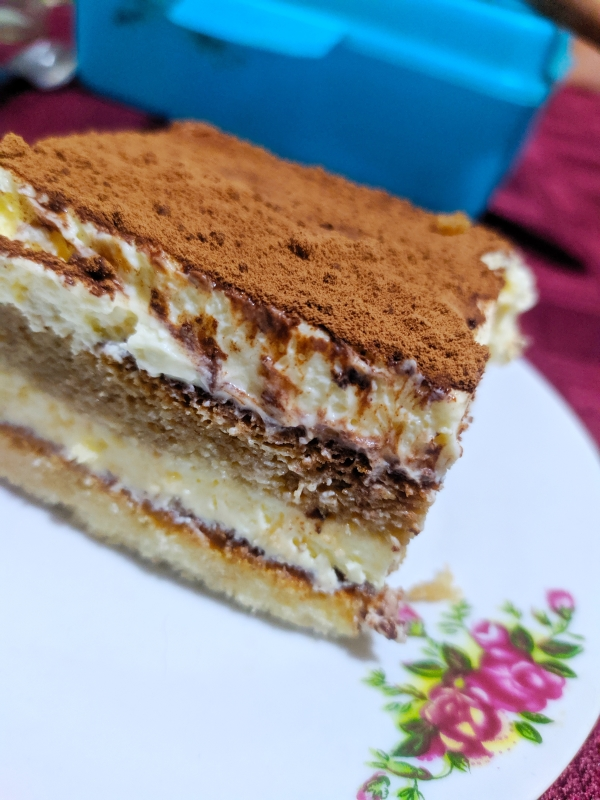

Tiramisú clásico

Receta casera de tiramisú clasico, con vanillas comerciales.
En esta receta vamos a estar preparando un tiramisú, utilizando la receta clásica de esta preparación.
Ingredientes
Para el almibar:
Para el aparato bomba:
- Yemas 5u (aproximadamente 100Gr)
- Almibar
Para la crema al mascarpone:
- Queso mascarpone 500Gr
- Crema de leche 400Gr
Para el baño de café y la terminación:
- Café 400cc
- Licor a eleccion, opcional (café al coñac, Oporto, Marsala, etc.) c/n
- Vainillas 25 a 30 unidades
- Cacaco en polvo amargo c/n
Procedimiento
- Preparar el almibar: en una cazuela verte el agua y el azucar.
- Mientras se calienta el almibar, batir las yemas.
- Cuando el almibar alcanza los 121°C (o punto bola) verter sobre las yemas en forma de hilo sin dejar de batir.
- Batir las yemas hasta obtener una mezlca al punto letra y ademas hasta que se enfrie la mezcla. Reservar.
- En un bolw juntar el queso mascarpone y la crema de leche y batir.
- Debe quedar una crema sin llegar a punto chantilli, es decir a un 80% de batido.
- Una vez obtenida la preparacion, integrar la mezcla con movimientos envolventes al aparato bomba previamente realizado y reservar.
- Preparamos el baño de café integrandolo con el licor seleccionado. Reservamos.
- Vamos a presentar y terminar la receta de la siguiente manera:
- En un molde a eleccion, ponemos la primera capa de vainillas y pinceleamos con el baño de café.
- Sobre esa primer capa, vertemos la mitad de la crema.
- Realizamos una segunda capa de vainillas y volvemos a pincelear.
- Volvemos a verter la crema, lo que resta, sobre la última capa de vainillas.
- Espolvoreamos el cacao amargo con ayuda de un tamiz.
- Reservamos en heladera al menos por 2Hs antes de servir.